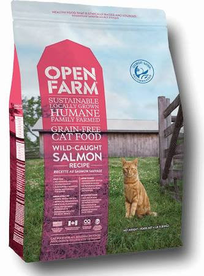
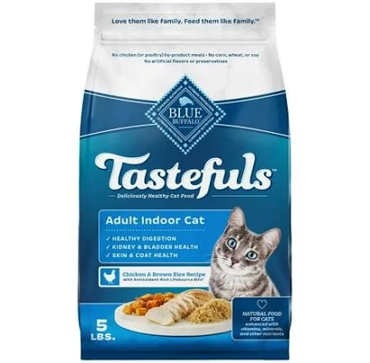
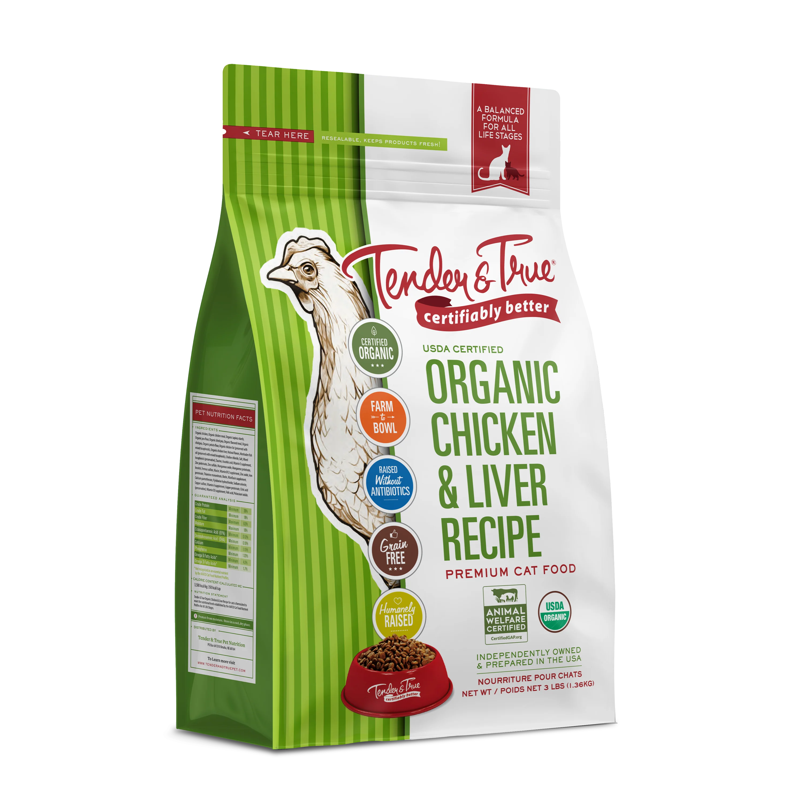
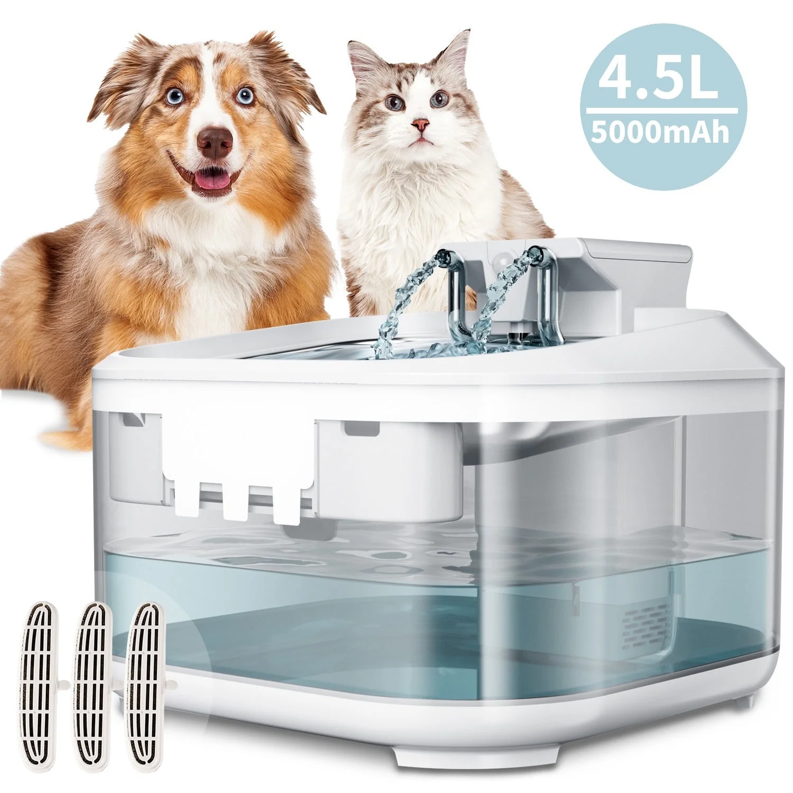

Learning to give your cat proper nutrition
Proper nutrition and clean water is essential in keeping your cat happy and healthy! These are a few approved food brands and suggestions as a good place to start. Remember that kittens and cats sometimes eat seperate foods! If your kitten is a newborn, they can only digest kitten-specific milk fed in a bottle. A little older, try to stick to pate or labeled kitten food to help them get ready for big cat food!

Open Farm Wild-Caught Salmon Dry Cat Food
- Description: Grain-free dry food made with sustainably sourced wild-caught salmon!
- Price: $63.99
- Where to buy: https://petswarehouse.com

Blue Buffalo Tastefuls Indoor Chicken & Brown Rice
- Description: Formulated for indoor cats, featuring real chicken and wholesome grains!
- Price: $20.98
- Where to buy: https://chuckanddons.com

Tender & True Organic Chicken & Liver Recipe
- Description: USDA-certified organic dry food with humanely raised chicken!
- Price: $15.99
- Where to buy: https://www.tenderandtruepet.com

Purina ONE Natural High Protein Grain Free
- Description: High-protein formula with real chicken, free from grains!
- Price: $79.98
- Where to buy: https://www.walmart.com
Cats really like flowing water, so getting a nice water fountain for them to drink is definetly worthwhile! This is one that I personally use for my five cats, that works really well!
Pet Water Fountain
- Description: A good material water fountain for pets of all sizes! Has a wide bowl so multiple pets can drink at once, and a good filtration system to keep the water clean!
- Price: $33.99
- Where to buy: https://www.walmart.com